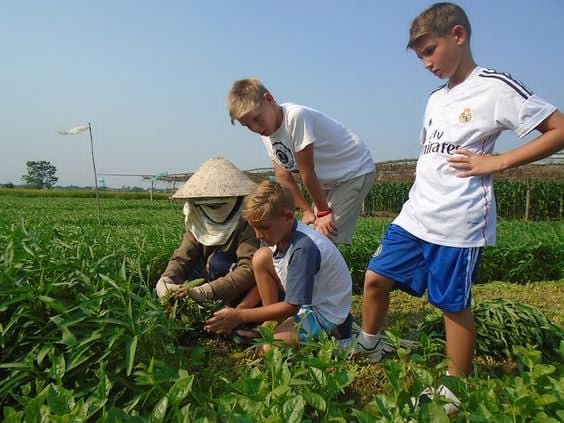

DAY 1: HANOI-ARRIVE (DINNER)
- - Upon arrival in Hanoi, you will be greeted by our tour guide and transferred to hotel in Hanoi.
- - Short walking tour around the Hoan Kiem Lake (Lake of Restored Sword)
- - Visit the Jade Temple (Ngoc Son Temple).
- - Dinner at local restaurant.
- - Overnight in Hanoi.
DAY 2: HANOI- CITY TOUR (BREAKFAST/LUNCH/DINNER)
- - Breakfast at the hotel.
- - Your city tour will take you to Hanoi’s key sites: The Ho Chi Minh's Mausoleum (exterior) and stilt house, the nearby One Pillar Pagoda; the Presidential Palace; the Temple of Literature, the tranquil Tran Quoc Pagoda, West Lake, and the Ethnology Museum.
- - Enjoy a late afternoon traditional Water Puppet Performance
- - Lunch and dinner at local restaurant.
- - Overnight in Hanoi.
DAY 3: HANOI – NINH BINH (BREAKFAST/LUNCH/DINNER)
- - Breakfast at hotel.
- - Morning, depart to Ninh Binh (Hoa Lu),known as “Halong Bay on land”(about 2 hours driving).
- - Visit the Dinh and Le temples of the Ancient Capital Hoa Lu.
- - After lunch enjoy a leisurely cruise to visit Trang An.
- - Transfer back to the hotel for refreshment.
- - Dinner at local restaurant
- - Overnight at hotel in Ninh Binh
DAY 4: NINH BINH – HALONG BAY (BREAKFAST/LUNCH/DINNER)
- - Enjoy breakfast at the hotel.
- - Depart to Ha Long, passing through the rich farmland of the Red River Delta, enjoy the lust scenery and have chance for taking photograph.
- - Upon arrival at Ha Long, we embark on a boat trip to cruise discovering this magnificent UNESCO World Wonder.
- - Lunch on board
- - Explore Sung Sot Cave, one of the most beautiful caves in the bay, join a cooking demonstration on the sundeck, passing Dinh Huong Island, Ga Choi Island, Dog Island, Sail Island, Titov Beach, watch a splendid sunset on the bay.
- - In the late afternoon, we anchor for the night on the bay and enjoy a delicious seafood dinner on board
- - Overnight on the cruise.
DAY 5: HALONG BAY – HANOI – FLIGHT – HUE (BREAKFAST/LUNCH)
- - Early morning coffee and tea will be served on the sundeck followed by a Tai Chi class.
- - Breakfast on board
- - Continue exploring the magnificent Ha Long Bay. We’ll take a rowing boat to explore the Luon Cave
- - Return to the junk for check out.
- - Lunch on board.
- - Transfer to Noi Bai (Hanoi) airport for the evening flight to Hue
- - Dinner on your own.
- - Overnight in Hue.
DAY 6: HUE (BREAKFAST/LUNCH/DINNER)
- - Breakfast at the hotel
- - In the morning, we will visit the Imperial Citadel is the home of Vietnam’s last royal dynasty – the Nguyen Dynasty
- - Free time before lunch at local restaurant.
- - In the afternoon, we’ll visit the tomb of King Tu Duc (built from 1864-1867, which is considered as one of the most beautiful and picturesque and largest works of architecture of Nguyen Dynasty’s royal palaces and tombs) and a conical hat factory, we’ll spend about 20 minutes visiting and seeing local people make conical hats
- - Then stroll through the Dong Ba central market where Hue specialties are sold.
- - Dinner at local restaurant.
- - Evening show of traditional songs on board on the Perfume River.
- - Overnight in Hue
DAY 7: HUE – DANANG - HOI AN (BREAKFAST/LUNCH/DINNER)
- - Breakfast at hotel.
- - Depart Hue for Hoi An across the Hai Van Pass (Pass of the Ocean Clouds)
- - Stop at Lang Co Beach, the Cham Museum ,the Son Tra Peninsula (Monkey Mountain) and Marble Mountain en route. Lunch at local restaurant
- - In the afternoon, take a walking tour of Hoi An - Discover the historic town which used to be a prosperous seaport city during the 16th to 18th centuries. Its sizeable community of foreign merchants resulted in a unique architectural style with Vietnamese, Chinese and Japanese influences. We will visit the former merchants’ houses, Chinese Temple, Museum of History, the 400-year-old Japanese Covered Bridge and the colorful market…
- - Dinner at local restaurant.
- - Overnight in Hoi An.
DAY 8: HOI AN – TRA QUE VILLAGE-HOI AN (BREAKFAST/LUNCH)
- - Breakfast at hotel.
- - Transfer by bus to the Tra Que village
- - Take a bicycle ride around the vegetable garden and join with the farmers in preparing the land and fertilizing with seaweed from the local lake. Continue doing some next steps such as: raking the ground, sowing, watering greens, picking greens and many more gardening activities.
- - Spend the rest of the morning working the land in honored way.
- - Having a break to prepare lunch with Chef.
- - After lunch, we return to Hoi An. The rest of today is at your leisure to explore the ancient town.
- - Dinner on your own.
- - Overnight in Hoi An

DAY 9: HOI AN– DANANG- FLIGHT - HO CHI MINH (BREAKFAST/LUNCH/DINNER)
- - Breakfast at hotel.
- - Transfer to Danang airport for the flight to Ho Chi Minh
- - Upon arrival, transfer to hotel for check in.
- - Lunch at local restaurant.
- - In the afternoon, we’ll visit the Notre Dame Cathedral, the Grand theatre, the City Hall, the Central Post Office (built between 1877 and 1883, is an excellent example of classic French colonial architecture), passing the former President palace, shopping at Ben Thanh Market
- - Enjoy the dinner with traditional music on boat along Saigon river
- - Overnight in Ho Chi Minh.
DAY 10: HO CHI MINH – MUI NE (PHAN THIET) (BREAKFAST/LUNCH)
- - Breakfast at hotel.
- - Driving to Mui Ne (180km from Ho Chi Minh city) where is famous for its enormous red and white sand dunes.
- - After lunch, we head to the White Sand Dunes, spend around an hour taking in the stunning scenery.
- - Next, head to the Red Sand Dunes. On the way, you can stop to take photos and enjoy the beautiful road along the beach, watch the beautiful sunset before check in your hotel.
- - Next, you will visit Phuoc Thien Pagoda before check in hotel.
- - Dinner on your own.
- - Overnight in Mui Ne.
DAY 11: MUI NE - HO CHI MINH (BREAKFAST/LUNCH)
- - Breakfast at hotel.
- - Morning is free at leisure or relaxing on beach.
- - Lunch at the resort.
- - In the afternoon, drive back to Ho Chi Minh City.
- - Dinner on your own.
- - Overnight in Ho Chi Minh City.
DAY 12: HO CHI MINH – MY THO – BEN TRE – VINH LONG (MEKONG DELTA) (BREAKFAST/LUNCH/DINNER)
- - Breakfast at hotel.
- - Depart to My Tho (2hours).
- - Upon arrival, we’ll get on a motor boat. Take a leisurely boat ride in Tien river to enjoy fresh air, to see the peaceful life of the local people. Passing the stilt house, the fishing floating farm, the four Islands (Dragon, Phoenix, Tortoise, Unicorn). After passing Rach Mieu bridge, we disembark at Thoi Son Islet that locates on Phoenix Island. Take a leisurely walking on the village paths, visit local people’s home, orchard garden and enjoy seasonal fruits while listening to traditional Southern folk music. Then visit honey bee farm and taste delicious honey tea with lemon that is really good for health.
- - Take a hand- rowed sampan through the creeks for sightseeing the natural water coconut trees a symbol in the Delta areas.
- - Return to the boat then cruising to Ben Tre province, visit coconut candy workshop to know how to make delicious candies by hand
- - Lunch in the garden with specialities (dried Ear Elephant fish) followed by a visit to a traditional house
- - Transfer to Vinh Long, you will stay in a local house with typical Mekong architecture located directly on a river bank, surrounded by gardens, bonsai trees and a variety of tropical fruit orchards. You will have a unique opportunity to experience life with a local family and find out more about their culture
- - Overnight in Vinh Long
DAY 13: VINH LONG– FLOATING MARKET- HO CHI MINH CITY (BREAKFAST/LUNCH/DINNER)
- - After breakfast, take a boat trip to see the famous Cai Be floating market.
- - Cruise through the intricate system of small channels, visit a village that specializes in making rice noodles and see the delicate “monkey bridges” of the Mekong Delta
- - Break for lunch before driving back to Ho Chi Minh City with some photo stops along the way.
- - Arrive in Ho Chi Minh City for a free evening to relax
- - Dinner at local restaurant.
- - Overnight in Ho Chi Minh City.
DAY 14: HO CHI MINH – DEPARTURE (BREAKFAST)
- - Breakfast at hotel.
- - You will have a little free time for shopping or relax
- - Check out, transfer to Ho Chi Minh Airport for your departure flight. Ends of tour!